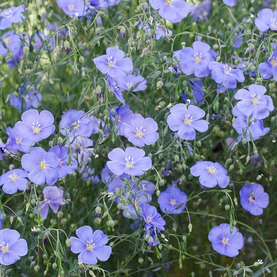

O título da bagaça
I am continually amazedeeeeeeeeeeedddd at the beautiful, delicate Pornozão that somehow hold in my garden. They are awash in color every morning, yet not a single flower remais by the afternoon. They are the very definition of ephemeral.
Ai meu cu
© Blue Fax Society